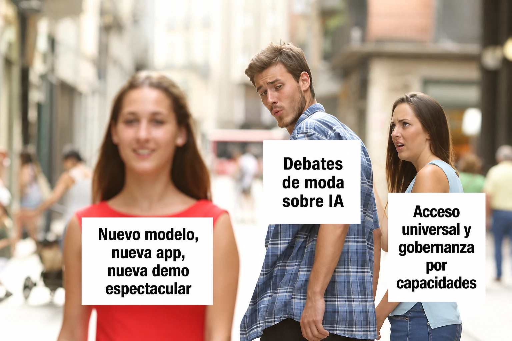

estrategIA #137 ·
La novedad que distrae
El contexto
El personaje se distrae con cada lanzamiento y deja atrás dos asuntos: que todos puedan acceder a la IA y que existan reglas para controlarla. «Gobernanza por capacidades» significa fijar esas reglas según lo que un sistema puede hacer, no según su marca. El artículo pedía atender ambas cuestiones aunque cambien los productos de moda.
Publicado en: estrategIA #137 - Dos errores que los gobiernos no pueden cometer si quieren que la IA sea una oportunidad y no una nueva fuente de desigualdad
Leer el texto de la imagen
Nuevo modelo, nueva app, nueva demo espectacular Debates de moda sobre IA Acceso universal y gobernanza por capacidades